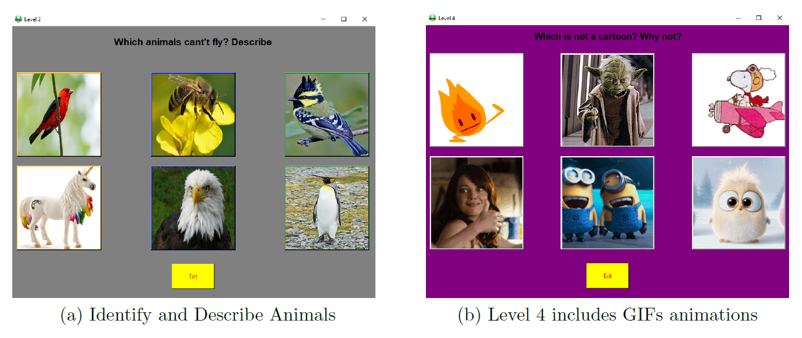

Gaming Platform
Hardware implementation
In regard to a hardware solution, to help children's with disabilities, I decided to make a projector using a DLPDLCR2000EVM Evaluation Board and a Raspberry-Pi 3B (running the Raspbian operating system). Succesively, I managed to then make the area projected touchscreen using a Wiimote (Wii Remote controller [24]) and an Infrared (IR) pen I built myself. The Wiimote is connected via Bluetooth (to the Raspberry-Pi) and is used as an infrared receiver to detect the activities of the infrared pen on the projected surface. Finally, I programmed a range of games that can be loaded on the Raspberry-Pi for children to play.
In order to wire and configure the connections between the Evaluation Board and the Raspberry-Pi, I followed an online guide by Frederick Vandenbosch [25] (Appendix A). I then set up the Raspberry Pi Bluetooth (to enable the Wiimote connection) by connecting the Bluetooth adapter and then installing the Bluez and Wiimote integration packages through Linux terminal. Lastly, I installed a free python-whiteboard software by Martin Rudel [26] to be used in order to calibrate the surface of the projected area.
It is also possible to implement this solution on Windows using a standard projector and the free whiteboard calibration software Smoothboard Air with Duo [27].
Figure 3.1: Infrared Pen, DLPDLCR2000EVM Evaluation Board and Raspberry Pi
Figure 3.2 shows the two different playing modes which can be used. In the first one, the projected area can be used as a whiteboard, while in the second one the user can choose to play far from the surface using the infrared pen as a pointer. Choosing the playing mode to use is important to pick the right calibration position of the Wiimote.
Figure 3.2: Touchscreen projector playing modes
This hardware interface was mainly designed to help children affected by Developmental Coordination Disorders. This type of motor disorder causes coordination problems (eg. wrong movement timing/balance) due to incorrect communication between the brain and the body.
First Game Development
I decided firstly to make a game designed for children with cognitive disabilities to test both their rate of reception and their ability to work with others. In order to create this game I made use of references such as \"Python game development\" [28] and \"Beginning Game Development with Python and pygame\" [29]. I decided to program this game using Python as programming language and pygame as my main working library.
Figure 3.3(a) shows the menu interface I designed for the game. I decided to name the game \"Avalanche Escape\", since it consists of moving characters around the graphical user interface (GUI) to avoid falling snowflakes. The GUI can be considered as a Cartesian coordinate system. During the game, the snowflakes fall from the top of the window, always changing their Y axis starting position. The snowflakes velocity slowly increases every-time the character successfully manages to avoid them (Figure 3.3(b)). This way the game will seem relatively easy to play at the beginning but as the user practises and gets better at playing it, the game difficulty will also increase. It is possible to read the game instructions using the game instruction button present on the menu.
 Figure 3.3: Avalanche escape
Figure 3.3: Avalanche escape
In the menu the user can choose to play in either single or multi player mode. In single player mode, the male character is moved by either using the mouse or keyboard arrows. In multi player mode, the female character is instead moved by using the mouse and the male one by using the keyboard. If one of the characters is hit by a snowflake, a menu will prompt warning of the collision and ask if the user wants to play again or go back to the main menu. If the user manages to avoid the predetermined number of snowflakes asked by the task, a menu will appear on the screen congratulating the user for winning. Each of these actions are accompanied by sounds which are correspondent to whether the user wins or loses the game in order to increase user engagement. Throughout the whole playing time, there is music playing in the background.
The user can pause the game at any time by pressing the keyboard escape button and switch between full-screen display mode (pressing F) and standard screen mode (pressing N). A computer play mode is also present which can be used to demonstrate to the user how to play. In order to implement the computer play mode I used a simple algorithm. Using Machine Learning instead of traditional coding could potentially lead to better gaming performance and score.
Finally, I made an executable version of this game which can be easily installed on any type of Windows platform using the cx_Freeze python library.
Imitation Games
Imitation is the ability to mimic other people behaviours. Children usually start imitating others from around the age of two and to mimic different types of behaviour at different age stages. The ability to imitate is not something inherently transmitted but is instead the result of our human social life organisation.
Studies demonstrate that children with autism usually suffer delays in their Imitation and Joint Attention abilities. Imitation skills can play a fundamental role in a child's behavioural development. During this project, I decided to design different games to try to stimulate and enhance these kind of abilities.
Second Game Development
This game is divided into two different modes (Figure 3.4). When selecting the first mode, the child is asked to recognise the animals in the pictures (Figure 3.5 (a)). Clicking on each of the different buttons an audio will play the sound of the corresponding animal and a message box will appear. The child will then be asked to type in a text-box the appropriate animal name. If the child types the right animal name (it doesn't matter if the name is written in all lowercase, all uppercase or a in mixture of them) a congratulations message box would appear. If instead the the child types the wrong answer, it would be encouraged to try again.
Figure 3.4: Game 2 Menu
When selecting the second mode (Figure 3.5 (b)), the child is instead asked to recognise and then write the animals names, this time by just hearing without corresponding images (therefore increasing the game difficulty). When playing either of the game modes the child will be encouraged by the parent/therapist to try to talk about the identified animals and to imitate their sound.
Figure 3.5: Game Mode Options
This game therefore aims to improve a child's ability to recognise and imitate animal sounds in the first mode and in the second one to guess (encouraging them to first take a risk and then learn from his/her mistakes) and imitate animals sounds. Different levels of difficulty can eventually be designed as further development of this game. The modes designed so far are aimed to not be too difficult, in order to try to not discourage a child from playing (if the game would have been too difficult from the start, a child might lose interest).
This game was designed using Python and libraries such as Tkinter, pygame and PIL.
Third Game Development
The aim of this game is to encourage children to imitate the therapist/parent's actions and to build objects/shapes (Figure 3.6). The game GUI consists of two canvases which can interchangeably be used by either the child or therapist/parent. Selecting the correspondent buttons, the users would be able to make appear on the screen up to six blocks which they can drop and drag around the screen to create objects or shapes. If an user tries to place a block either outside the game window or in the canvas of the other player, he/she will be stopped by a warning prompt asking him to try again. While playing this game, the parent/therapist should build one or more object(s) using the given blocks on one canvas and the child should then try to imitate the same object(s) on his canvas either while the parent/therapist is making it or after.
Figure 3.6: Game 3
-4ex Once the child has come up with his solution to this problem, it is then possible to store the result by clicking the \"Save\" button on the GUI. A screen-shot will then be generated and stored as a record of the child's performance. Keeping a record of all the different attempts the child makes while trying to build different types of objects, is then possible to see whether the child has improved over time and understand if the child has a problem imitating certain specific shapes or patterns.
I also decided to implement an EXE version of this game to make implementation easier. This game was designed using Python and libraries such as pyoutogui, pygame and time.
Fourth Game Development
This game was designed to help children develop their recognition and matching skills solving puzzles (Figure 3.7).
Figure 3.7: Game 4 Menu
I decided to design this game using Unity for Graphic Development and C# as programming language for coding the graphics behaviour. I decided to opt for this solution because it enabled me to make available this game not just for desktop platforms (like in all the other games made so far), but also on Android devices (eg. mobile phones and tablets). This was made possible by creating both an EXE and APK format of the game. Both versions have been successfully tested on both platforms.
Figure 3.8: Game Mode
Clicking (or tapping using a touchscreen Android device) on each of the images that composes the puzzle makes them rotate by 90clockwise (Figure 3.8 (a)). Once the child has selected the right orientation for each of the puzzle images, a congratulations text message appears on the screen and the user is redirected to the main menu where they can decide if to play again or end the game (Figure 3.8 (b)).
Joint Attention Games
Joint attention (JA) is the ability of two individuals to share their interest on the same event, person or object. This implies an underlying understanding between the two people in question. This can be achieved through any form of verbal or non-verbal indication such as pointing or eye-gazing. In JA, a child follows the lead of the parent/therapist and tries to copy or mimic them. JA allows children to share enjoyment and learn from others.
Children usually start showing the first forms of JA around the age of 9 months old. Children affected by autism symptoms might instead show JA abilities later on or, in some cases, might never fully develop them. To external viewers, this might look like a lack of engagement in collaborating and interacting with other people.
There are two main forms of JA:
-
Child initiating JA
-
Child responding to call of JA from another person
Fifth Game Development
I decided to structure this game with four different levels of difficulty (Figure 3.9). This game consists of identifying the right objects between the given options (there can be either one or more right answers) and recording the child's justification for their decision. It's main application is to improve child's receptive communication.
Figure 3.9: Game 5 Menu
If the child selects the right answer, a congratulations prompt will appear. The prompt will inform the child he/she made the right choice and will then inform them that closing it will start the recording. The recording will continue until the child stops speaking. For each time the child selects the right answer, the recording will be stored and could then be used for later analysis by the therapist. The recording will play a vital role in evaluating the understanding of the child and track any signs of improvement. If the child selects instead a wrong answer, a prompt will encourage him/her to try again (Figure 3.10 (a)).
Figure 3.10: Game Mode Options
For the fourth difficulty level of this game, I decided to make the buttons interactive using instead of plain images, animated GIFs. Doing so I aimed to make the game more stimulating and interactive for the child (Figure 3.10 (b)).
This game was designed using Python and libraries such as Tkinter, PIL, itertools, pyaudio and wave.
Sixth Game Development
This game aims to help children improve their receptive communication, in particular their understanding of quantities and numbers. I decided to design this game using Microsoft Visual Studio and C#, which facilitated the creation of the final EXE file.
The menu interface (Figure 3.11 (a)) offers apart from the main buttons also a top drop down menu which can give additional help for the child to learn about the game. At the bottom of the GUI is also present a status bar, offering additional information to the user about the meaning of the different menu options (once clicked on them) and to keep the user updated about the status of the game.
As shown in Figure 3.11 (b), during each game level are tested the child's abilities to identify the button showing the asked right number of objects displayed in the pictures.
Figure 3.11: Game Six Options
Seventh Game Development
The seventh game I decided to design was a drawing canvas for two users (Figure 3.12). I decided to program this game using Python and the Tkinter graphics library. The two canvases consist of two independent drawing surfaces. This way, it is either possible for the user to make free drawings when playing on their own or to let the therapist/parent draw something on one of the two canvas and then let the child imitate their drawing on the other canvas. It is additionally possible, when playing with the therapist/parent, to let the fist write or pronounce a word and then let the child draw the corresponding image. This type of game aims to help children learn through imitation and respond to external stimulus.
Figure 3.12: Drawing canvas for two users
As can be seen from Figure 3.12, the GUI gives the users the choice to: select their preferred font size (bottom centre slider), favourite colour (left-bottom button), switch between pen and eraser mode (top centre button, right bottom button) and to clear the canvases (top left button for left canvas and top right button for right canvas).
EEG Cap
Having designed a suite of games and tested they functioned correctly using them with the hardware implementation, I started working to connect, synchronise, and store the data from the EEG Cap. In my case, I have been working with the Enobio 20 (produced by Neuroelectronics [30]), a wearable, wireless sensor system used for recording electroencephalogram (EEG) signals.
In order to connect and control the Enobio 20 using my laptop, I first had to install the Neuroelectrics Instrument Controller (NIC) free software offered by Neuroelectronics and then connect my laptop to the Enobio 20 via bluetooth using the NIC. Once I made sure everything was set up between my laptop and the Enobio 20, I started working on trying to control the Enobio 20 calling a MATLAB script instead of having to use the NIC. To do so, I made use of the MatNIC MATLAB toolbox produced by Neuroelectronics [31].
Making a MATLAB script calling some of the many available MatNIC functions, I managed to automate the process of: opening the NIC software, connecting the Enobio 20 via bluetooth, starting the EEG readings for a chosen predetermined amount of time and output the final reading results in a comma-separated values (CSV) file format.
When calling the MATLAB script, it is still necessary to press \"Enter\" to allow the NIC software to be controlled remotely. This has been included by Neuroelectrics for security reasons, in order to avoid giving unauthorised access to the EEG Readings.
Using the MatNICEEGRecord function (keeping TCP connection enabled), the CSV file is composed by as many columns as the channels of the device (in this case 20) and two more columns, one for the markers (if no markers have been sent, this column will be composed just by zeroes) and one for the timestamp. If instead the MatNICEEGRecordLSL function is used (through Lab Streaming Layer communication), the CSV file is composed by as many columns as the channels of the device (in this case 20). The units of the measurements for each channel are in nano-Volts (nV).
Finally, I managed to synchronise the seventh game I developed with the EEG readings calling the MATLAB script I made, using Python. I therefore modified the code for the drawing canvas for two users by adding the matlab.engine library to call the MATLAB script file and using the threading library to make the canvas game and the EEG reading run simultaneously (without dividing the code into threads they would have run sequentially, compromising synchronisation).
The main functions described above are available in Appendix B, Listings 1 and 2.